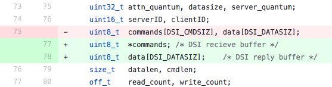

其實不是第一年在 HITCON CTF 出題，由於有正職在身，沒有時間從頭設計題目，因此都會盡量從跟工作有關聯的方向設計題目，今年這題其實也是在去年工作時處理 Insident Response 時遇到的 case，但經過深入研究後，發現了這個 CVE 有原揭露者沒想到的 exploit 方式，是我到現在出題為止最滿意的一題，從迴響上來看也是最好的一題 XD
Netatalk 是一套實作蘋果系統上 AFP 協定的軟體，AFP 跟 Windows 上的 SMB 類似，是用於兩台不同電腦間需要傳輸檔案的一種 file transfer protocol，但後來隨著 Apple 也支援 SMB 後，AFP 的使用量相對減少很多，但由於用 AFP 傳輸檔案還是比 SMB 快速和簡便一些，因此還是有些人會搭配 Time Machine 之類的服務進行使用
Netatalk 在去年的 12 月左右被爆出了一個 Critical 級別的 unauth RCE 漏洞，但隨著細節公開之後，研究者表示自己嘗試後發現只能在 NAS 上進行利用，詳情可以參考 tenable 的 blog
- https://medium.com/tenable-techblog/exploiting-an-18-year-old-bug-b47afe54172
- BTW，這篇 blog 有點標題殺人....XD 雖然這個問題在 18 年前就產生，但是在 2012 年 3.0.1 版發布之後，改動了 object 結構才變成一個 exploitable 的漏洞，在這之前應該只能造成程式邏輯錯誤而使檔案傳輸中斷

只能在 NAS 上利用的原因是，現今 Linux distribution 的 compiler，預設編譯時都已經加入 -pie 的參數，這導致如果是 ASLR enabled 的系統上，攻擊者沒辦法事先知道記憶體的 layout，也沒辦法如 blog 提到的利用方式去進行後續的任意位置寫入
- 由於 PIE 保護會有一定幅度影響系統的效能，目前大多數的 NAS 廠商都沒有開啟
此外，攻擊者原本提到的利用方式只能繞過 auth 後執行 AFP 的檔案操作，沒辦法做到真正意義上的 RCE，但我在 HITCON CMT 2019 的 talk 上，提出了另外利用方式，可以在同樣的漏洞上做到真正意義上，透過 execve 執行系統上的任意指令，達到真正意義上的 RCE
當時在研究這個漏洞的同時，其實就有在質疑真的在 ASLR 開啟的情況下，真的是 unexploitable 的漏洞嗎 ? 那時候簡單看了一下，overflow 使用 memcpy，可以做 heap 上的 partial write，可能是有機會利用的，但與當時的 talk 主題 NAS 無關，因此保留起來沒有說這件事情，藏招這次出題時再來好好研究 XD
首先我的想法是：「既然可以做 heap 上的 partial overwrite，那只要把 data ptr 往回指，應該就能做 CTF 常見的 heap exploit 吧，尤其現在的環境都有 tcache 好玩，可能有機會在 malloc 時搞出 main_arena 然後做進一步的利用。」
但環境跑起來發現原本在 NAS 上觀察的 heap exploit 不見了... XD 原本的 data ptr 被指到 mmap 分出來的區段上，沒辦法用 ptmalloc 的機制來搞事 QQ 會這樣的原因是因為 afp protocol 中有一項 server quantum 的設定，這個值會影響到 malloc 出來的 buffer 大小 ... 預設值是 0x100000 (1 mb)，所以會改用 mmap 得到的空間當成 buffer，沒辦法如預期的一樣在 heap 上搞事
- 我之前測試的 NAS 上有為了效能特調過這個值，因此會使用
brk分配出的 heap 當做 buffer
原本以為好像就真的不能用了 QQ 但意外觀察到每次 data ptr 指向的位置都是相同的，afpd 在處理 request 的時候是 fork 出一個 process，在收到 exit 的 AFP command 或著 timeout 之前，這個 process 都會保留 session 等待 client 進行檔案傳輸，相信打 CTF pwn 的人都可以馬上聯想到：
fork => memory layout 不變 => ASLR 是假 der
每次連上的 data ptr 不變，因此我們可以用 overflow byte-by-byte 的方式觀察程式是否 crash，來判斷說目前 data ptr 的位置是多少，再透過 mmap 與 library 的 offset 去推算其他 library 的位置，於是現在我們對漏洞的可以利用程度，從 不知道能對哪裡做任意寫入 變成 可以對 library 的 bss 和 data 段做任意寫入
- 但由於沒辦法利用此方式 leak 出 code 段的位置，因此還是沒辦法用我在 HITCON CMT 上提的方式做到 RCE
至此我們就有機會寫 __malloc_hook 或 __free_hook 之類的位置來控 RIP 了，但由於這個 exploit 的程式 afpd 本身就是透過 socket 連線，不像 CTF challenge 通常會 redirect I/O 到 socket 上，也就不能簡單的跳 one gadget 來拿 shell，必須自行 dup I/O 到 socket 在拿 shell，因此我們需要能跑 shellcode 或做足夠長度的 ROP 才行
這邊可以達成的方式很多，我的預期解法是 overwrite ld 上的 data 段，把 dl_load_lock 和 dl_rtld_lock_recursive 的值都寫掉，這樣就可以跳 setcontext gadget 做 SROP
dl_rtld_lock_recursive是一個 function ptr，dl_load_lock是一個 mutex- 程式離開時會在 dl-fini 呼叫
__rtld_lock_lock_recursive(GL(dl_load_lock));來 release 程式一些資源，像是dlopen開啟過的 library
但 afpd 在 SIGPIPE 時不會結束程式，還是會等到 timeout 才離開，原本會需要在下一次的 command 送 AFP protocol 的 exit 讓程式結束，才能觸發 control RIP，我原本打算留給大家來解決這個問題，但考慮到 bruteforce ASLR 時會造成許多 sessions，還是決定在 afp.conf 裡面將 timeout 改成 0 讓 afpd 立刻結束，避免題目炸裂 XD
最後不得不提 Tea Deliverers 的做法，雖然繞了一些遠路，但卻也是 real world exploit 常遇到的狀況，這次的漏洞能任意寫才是少見的情況 XD
02:01 < riatre> zzoru: We overwrote GOT entry of memcpy in libatalk.so.18 with system
02:02 < riatre> Then trigger that with a.... strange code path I'd say
flag: hitcon{D1d_y0u_us3_an0ther_0d4y_to_g3t_f14g?}
exploit: netatalk.py